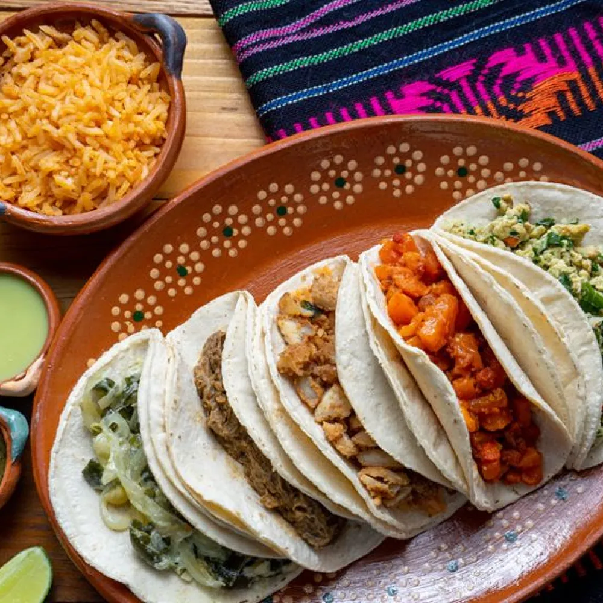

Tacos

Description
You woke up today with a great hunger, thouugh not any hunger, but HUNGER OF TACOS!
Today we are going to teach you how to make them in a very easy way.
Ingredients
- 1 onion
- 1 red pepper
- 1 green pepper
- olive oil
- 2 cloves of garlic
- 1 pinch of paprika
- 1½ teaspoons cumin
- 500g quality minced beef
- 250ml organic beef stock
- 12 corn taco shells
Salsa
- 2 ripe tomatoes
- 1 spring onion
- 3 springs of fresh coriander
- ½ a lime
Guacamole
- 2 ripe avocados
- ½ lime
- 2 tablespoons creme fraiche
Steps & Indications
- Peel and dice the onion, then deseed and dice the peppers. Soften in 1 tablespoon of oil in a large pan over a low heat.
- Peel, finely slice and add the garlic, along with the paprika and cumin, and cook for 1 to 2 minutes. Add the beef and stir until it has browned.
- Pour in the stock, cover, and cook for 45 minutes, or until reduced and delicious.
- Preheat the oven to 180ºC/350ºF/gas 4.
- For the salsa, roughly chop the tomatoes, trim and finely slice the spring onion, then pick and roughly chop the coriander leaves. Combine with the lime juice, then season carefully to taste.
- For the guacamole, halve and destone the avocados, then mash the flesh with a fork. Squeeze in the lime juice, add the crème fraîche, season, and gently mix it all up.
- Spread the taco shells out on a baking tray and place in the oven for 3 to 4 minutes until crisp.
- Fill the shells with the meat, salsa and guacamole or lay everything out and let everyone help themselves.
Voila!